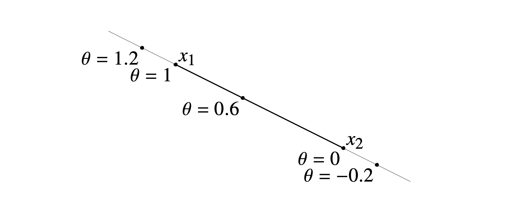
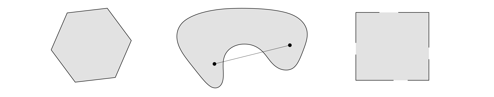
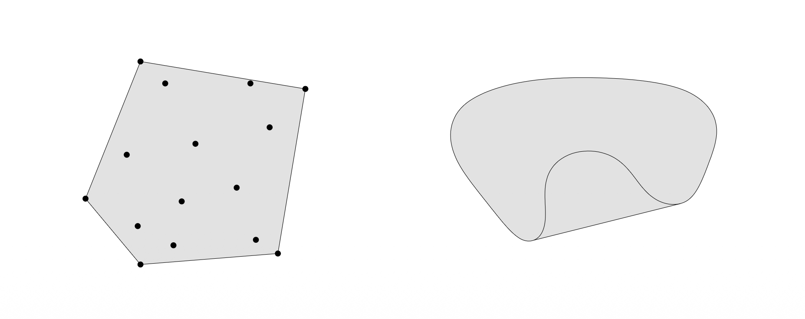
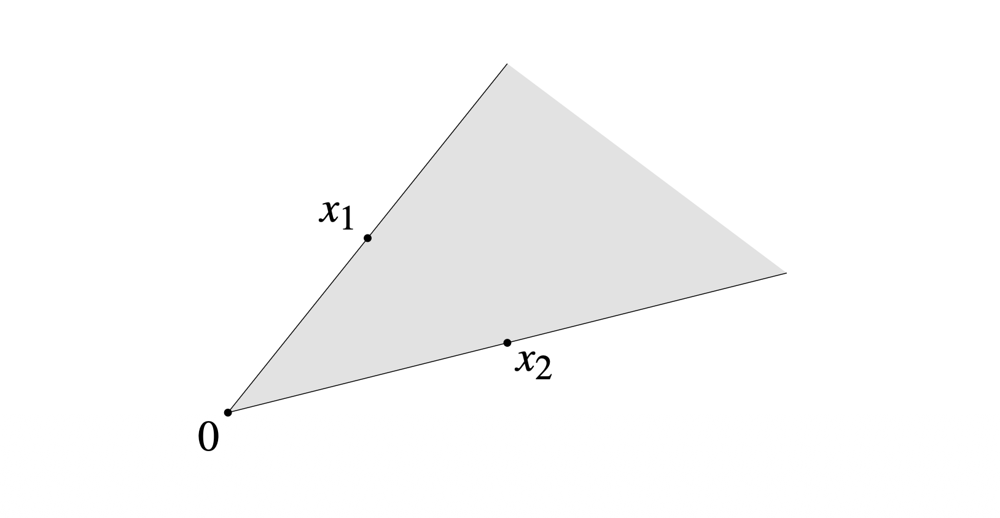
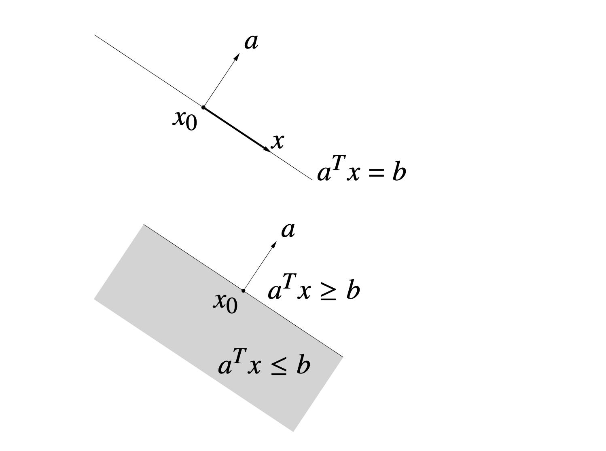
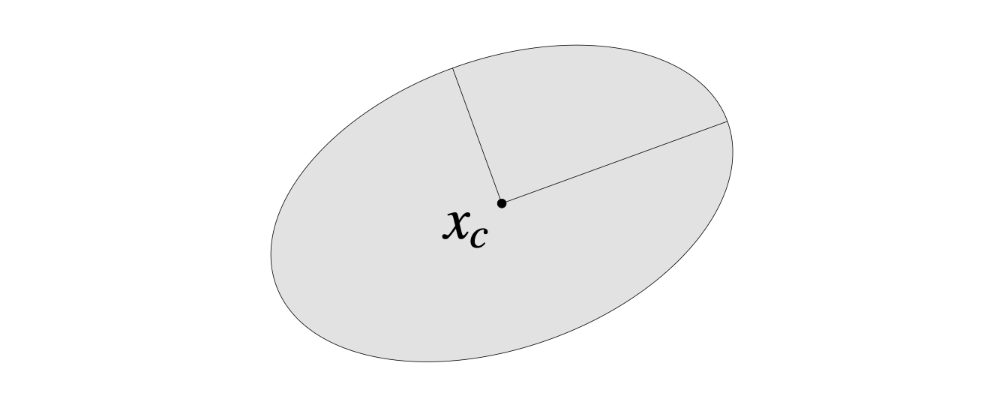
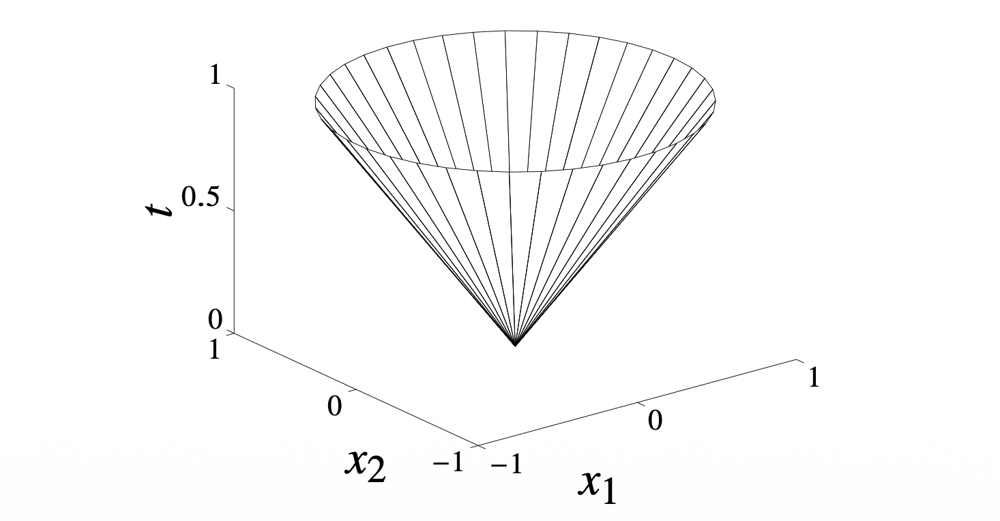
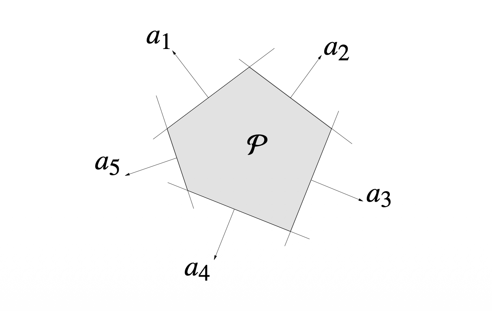
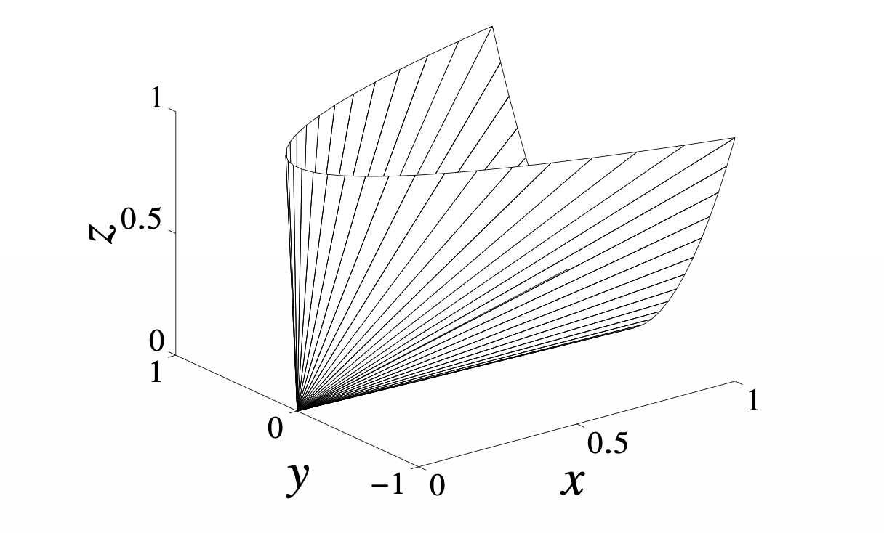

볼록 최적화(Convex Optimization)를 공부하기 위해 가장 먼저 다루어야 할 기본 단위는 집합(Set)입니다. 최적화 문제는 기본적으로 어떤 제약 조건 하에서 목적 함수를 최소화하는 문제이며, 이때 제약 조건이 형성하는 영역의 기하학적 성질이 문제의 난이도와 해결 가능성을 결정하기 때문입니다.
이 포스트에서는 Boyd & Vandenberghe의 Convex Optimization 2장의 내용을 바탕으로, Affine Set, Convex Set, Cone의 정의와 주요 예시들을 정리합니다.
1. Affine and Convex Sets
1.1 Affine Sets (아핀 집합)
가장 기본적인 기하학적 구조인 ’선(Line)’에서 시작해봅시다. 공간 상의 서로 다른 두 점 \(x_1, x_2 \in \mathbb{R}^n\)을 지나는 직선은 다음과 같이 매개변수 \(\theta\)를 이용해 표현할 수 있습니다.
\[ y = \theta x_1 + (1-\theta)x_2, \quad \theta \in \mathbb{R} \]
이때 \(\theta\)가 0과 1 사이라면 두 점 사이의 선분이 되지만, \(\theta \in \mathbb{R}\) 전체라면 무한히 뻗어 나가는 직선이 됩니다.
정의 (Affine Set): 집합 \(C \subseteq \mathbb{R}^n\)가 Affine하다는 것은, 집합 내의 임의의 두 점 \(x_1, x_2 \in C\)에 대해, 그 두 점을 지나는 직선 전체가 다시 집합 \(C\)에 포함되는 경우를 말합니다.
즉, 다음 조건이 성립해야 합니다. \[ \forall x_1, x_2 \in C, \; \forall \theta \in \mathbb{R} \implies \theta x_1 + (1-\theta)x_2 \in C \]
이 개념은 두 점을 넘어 \(k\)개의 점으로 확장할 수 있습니다. 이를 Affine Combination이라고 합니다. \[ x = \theta_1 x_1 + \cdots + \theta_k x_k, \quad \text{where } \sum_{i=1}^k \theta_i = 1 \] Affine 집합은 모든 Affine combination에 대해 닫혀 있습니다.

대표적인 예시: 선형 방정식의 해집합 \(C = \{x \mid Ax = b\}\)는 Affine set입니다. 반대로, 모든 Affine set은 선형 방정식의 해집합으로 표현될 수 있습니다.
1.2 Convex Sets (볼록 집합)
직선이 아닌 선분(Line Segment)을 생각해봅시다.
\[ y = \theta x_1 + (1-\theta)x_2, \quad 0 \le \theta \le 1 \]
정의 (Convex Set): 집합 \(C\)가 Convex하다는 것은, 집합 내의 임의의 두 점 \(x_1, x_2 \in C\)를 잇는 선분이 완전히 \(C\)에 포함되는 경우를 말합니다.
수식으로는 \(\theta\)의 범위가 \([0, 1]\)로 제한된다는 점이 Affine set과의 차이입니다. \[ \forall x_1, x_2 \in C, \; 0 \le \theta \le 1 \implies \theta x_1 + (1-\theta)x_2 \in C \]
직관적으로, 집합 내부의 어느 두 지점을 연결해도 집합의 경계를 벗어나지 않는다면 그 집합은 볼록(Convex)합니다.

Convex Hull
어떤 집합 \(S\)가 Convex가 아닐 때, \(S\)를 포함하는 가장 작은 Convex set을 만들 수 있을까요? 이를 Convex Hull이라고 하며 \(\text{conv } S\)로 표기합니다. 이는 \(S\)의 모든 점들에 대한 Convex Combination들의 집합과 같습니다.
\[ \text{conv } S = \left\{ \sum_{i=1}^k \theta_i x_i \mid x_i \in S, \theta_i \ge 0, \sum_{i=1}^k \theta_i = 1 \right\} \]

1.3 Cones (원뿔 집합)
이번에는 원점 0에서 뻗어 나가는 반직선(Ray)을 고려합니다.
정의 (Cone): 집합 \(C\)가 Cone이라는 것은 임의의 \(x \in C\)와 \(\theta \ge 0\)에 대해 \(\theta x \in C\)인 경우입니다. 즉, 원점에서 시작하여 집합 내의 점을 지나는 반직선이 집합에 포함되어야 합니다.
정의 (Convex Cone): Cone이면서 동시에 Convex인 집합을 Convex Cone이라고 합니다. 이는 Conic Combination에 대해 닫혀 있는 집합과 동치입니다.
\[ x = \theta_1 x_1 + \theta_2 x_2, \quad \theta_1, \theta_2 \ge 0 \]
Affine combination이 계수의 합이 1이고 부호 제약이 없었던 것, Convex combination이 계수의 합이 1이고 양수여야 했던 것과 달리, Conic combination은 계수의 합 조건 없이 양수(비음수) 조건만 존재합니다.

2. Standard Examples of Convex Sets
최적화 문제에서 자주 등장하는 중요한 Convex Set들을 살펴봅니다.
2.1 Hyperplanes and Halfspaces
Hyperplane (초평면)
초평면은 다음과 같은 선형 방정식의 해집합입니다. (\(a \neq 0\)) \[ \{ x \mid a^T x = b \} \] 기하학적으로 \(a\)는 초평면의 법선 벡터(normal vector)이며, \(b\)는 원점으로부터의 오프셋을 결정합니다. 초평면은 Affine set이며 동시에 Convex set입니다.
Halfspace (반공간)
초평면은 공간을 두 부분으로 나눕니다. 그중 한쪽 영역을 반공간이라고 하며 선형 부등식으로 정의됩니다. \[ \{ x \mid a^T x \le b \} \] 반공간은 Convex set이지만, Affine set은 아닙니다 (경계선상의 두 점을 잇는 직선이 영역 밖으로 나갈 수 있기 때문).

2.2 Euclidean Balls and Ellipsoids
Euclidean Ball
중심이 \(x_c\)이고 반지름이 \(r\)인 유클리드 볼(Ball)은 다음과 같이 정의됩니다. \[ B(x_c, r) = \{ x \mid \| x - x_c \|_2 \le r \} = \{ x_c + ru \mid \| u \|_2 \le 1 \} \] 이는 가장 직관적인 형태의 Convex set입니다.
Ellipsoid (타원체)
타원체는 구(Ball)를 선형 변환하여 찌그러뜨린 형태로 볼 수 있습니다. 행렬 \(P \in S^n_{++}\) (대칭 양의 정부호 행렬, Symmetric Positive Definite)를 사용하여 정의합니다. \[ \mathcal{E} = \{ x \mid (x - x_c)^T P^{-1} (x - x_c) \le 1 \} \] 여기서 \(P\)의 고유값(eigenvalue)들은 타원체 축의 길이를 결정하며, \(P = I\)일 때 유클리드 볼이 됩니다.

2.3 Norm Balls and Norm Cones
유클리드 노름(\(\|\cdot\|_2\))을 일반적인 노름 \(\|\cdot\|\)으로 확장하면 더 다양한 Convex set을 정의할 수 있습니다.
- Norm Ball: \(\{ x \mid \| x - x_c \| \le r \}\)
- Norm Cone: \(\{ (x, t) \mid \| x \| \le t \} \subseteq \mathbb{R}^{n+1}\)
특히 유클리드 노름을 사용한 cone인 Second-order cone (Ice-cream cone)은 다음과 같이 정의되며, 이는 볼록 최적화에서 매우 중요한 역할을 합니다. \[ C = \{ (x, t) \in \mathbb{R}^{n+1} \mid \| x \|_2 \le t \} \]

2.4 Polyhedra (다면체)
Polyhedron(다면체)은 유한 개의 선형 등식과 부등식의 교집합으로 정의됩니다. \[ \mathcal{P} = \{ x \mid Ax \le b, \; Cx = d \} \] 여기서 \(Ax \le b\)는 반공간(Halfspace)들의 교집합을, \(Cx = d\)는 초평면(Hyperplane)들의 교집합을 의미합니다. 따라서 Polyhedron은 항상 Convex set입니다. (단, 유계(bounded)일 필요는 없습니다.)

2.5 Positive Semidefinite Cone (양의 준정부호 원뿔)
행렬 공간에서의 Convex set을 생각해봅시다. \(S^n\)을 \(n \times n\) 대칭 행렬(Symmetric matrix)들의 집합이라고 할 때, Positive Semidefinite (PSD) Cone \(S^n_+\)은 다음과 같이 정의됩니다.
\[ S^n_+ = \{ X \in S^n \mid X \succeq 0 \} = \{ X \in S^n \mid z^T X z \ge 0, \forall z \} \]
이 집합은 이름 그대로 ‘Cone’이며 ’Convex’ 성질을 만족합니다.
\(S^2_+\)의 시각화
\(2 \times 2\) 대칭 행렬 \(X = \begin{bmatrix} x & y \\ y & z \end{bmatrix}\)가 양의 준정부호가 되기 위한 필요충분조건은 다음과 같습니다. 1. \(x \ge 0, z \ge 0\) (대각 성분 비음수) 2. \(xz - y^2 \ge 0\) (행렬식 비음수)
이를 3차원 공간 \((x, y, z)\)에 그려보면, 원뿔 모양의 기하학적 구조를 가집니다.
